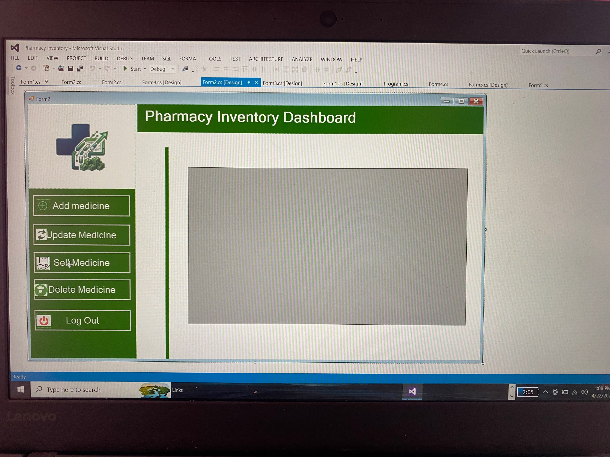

INDEX 01
I'm Sha-ina Barcial Jaradal, an Information Technology student studied at Eastern Samar State University. I study Human Computer Interaction, web development, and systems design areas that draw me in because they blend creativity with problem solving to build tools that actually help people.
INDEX 02
INDEX 03

This system design allow pharmacy staff easily manage medicine records, saving time and reducing mistakes in checking and updating stock. It also ensures medicines are always available and properly tracked, helping keep operations smooth and safe for everyone.
INDEX 04
BS Information Technology
Eastern Samar State University main
Focus on Human Computer Interaction, Web Development, and Systems Administration. Active in academic projects and student organizations.
2024— PreviousHumanities and Social Sciences
Nena National High School
2018— Previous
Elementary Education
Putong San Julian Eastern Samar
Student Experience
School Project
Gained valuable experience through school activities and group projects, which helped improve my communication skills and ability to work well with others.
INDEX 05